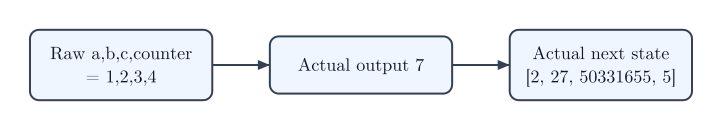
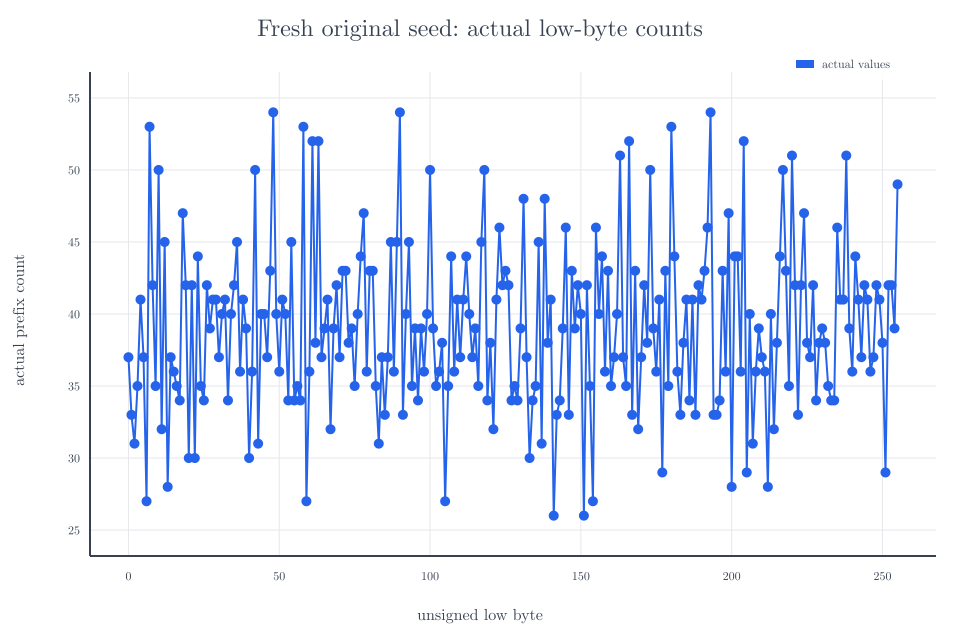
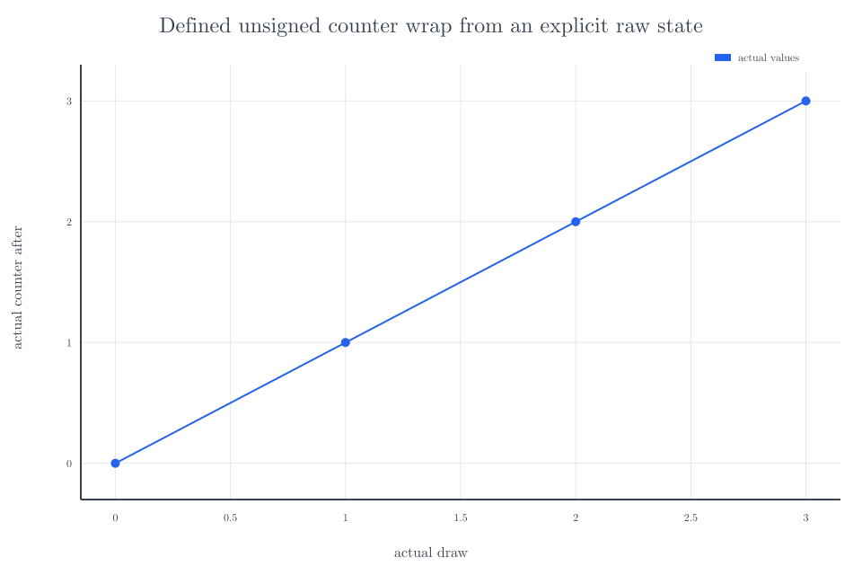
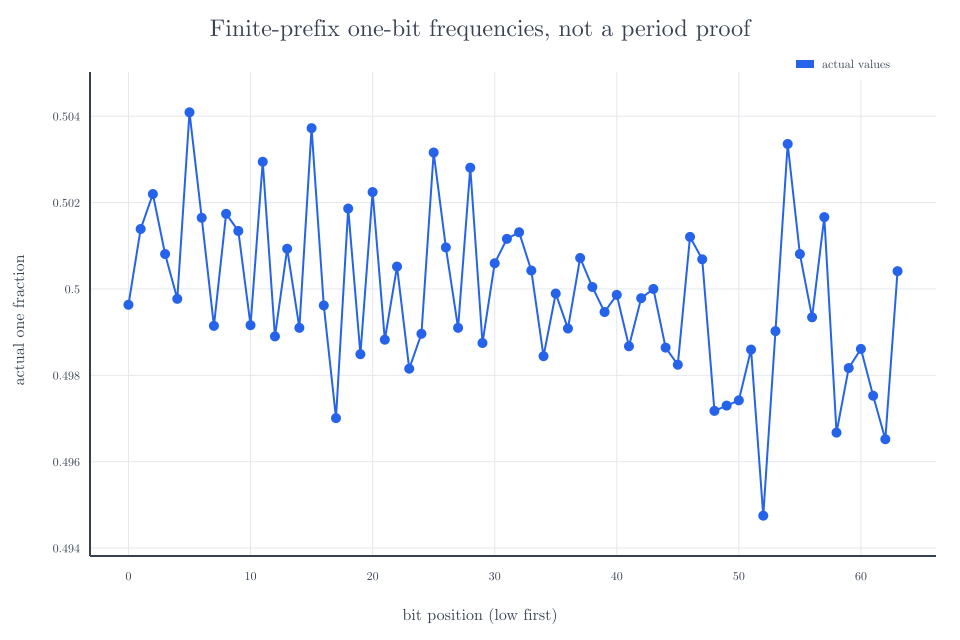

SFC64: actual word/counter transitions and finite-prefix diagnostics
Abstract
Generate reproducible64-bit pseudorandom words from three state words and a counter. Actual native snapshots show a hand-checkable step before the original seed0xC0FFEE distribution calls and finite-prefix counts.
Mechanism and mathematical scope
All word arithmetic is modulo264. Output=a+b+counter, then increment the counter; replace a by b xor (b right-shift11), b by9*c, and c by rotate-left(c,24)+output. The local historical seed recipe uses three SplitMix64 words and counter1 without warmup; this differs from some external library initialization recipes. A raw snapshot excludes the inherited normal spare; copying the complete engine preserves it. Because the counter advances modulo264, equality of complete states requires a multiple of2^64 steps, but that observation alone does not specify the full output period or prove randomness.
A tiny actual producing history
The table and native concept diagram read the same producing execution. Every block below is a complete editable C++ program.
#include <dm/dm.hpp>
int main() {
namespace a = dm::algorithms;
namespace g = dm::graphics;
std::filesystem::create_directories("build");
namespace r = dm::random;
r::Sfc64 engine(std::array<std::uint64_t, 4>{1, 2, 3, 4});
auto s = engine.next_trace();
std::print("Actual before `{}`, actual output {}, actual after `{}`.\n",
s.before, s.value, s.after);
g::Diagram concept_diagram(48, 1100);
concept_diagram.node("n0", {0, 0}, "Raw a,b,c,counter = 1,2,3,4");
concept_diagram.node("n1", {5, 0}, std::format("Actual output {}", s.value));
concept_diagram.node("n2", {10, 0},
std::format("Actual next state {}", s.after));
concept_diagram.edge("n0", "n1").edge("n1", "n2");
concept_diagram.save_svg("build/sfc64_tiny.svg");
}Actual before [1, 2, 3, 4], actual output 7, actual after [2, 27, 50331655, 5].

The retained original experiment
#include <dm/dm.hpp>
int main() {
namespace a = dm::algorithms;
namespace g = dm::graphics;
std::filesystem::create_directories("build");
namespace r = dm::random;
r::Sfc64 engine(0xC0FFEEULL);
const auto raw = engine.next_u64();
const auto uniform = engine.uniform01();
const auto normal = engine.normal();
const auto integer = engine.uniform_u64(0, 99);
std::print("Original call order: raw {}, uniform {:.6f}, normal {:.6f}, integer {}.\n\n",
raw, uniform, normal, integer);
auto sample = r::sfc64_run(0xC0FFEEULL, 10000);
std::vector<double> x, y;
std::print("| low byte | actual count in fresh10000-word prefix |\n| ---: | ---: |\n");
for (std::size_t i = 0; i < 256; ++i) {
std::print("| {} | {} |\n", i, sample.low_bytes[i]);
x.push_back(i);
y.push_back(sample.low_bytes[i]);
}
auto plot = g::RPlot::create();
plot.lines(x, y, "actual values", {37, 99, 235}).points(x, y, {37, 99, 235},
5).title(
"Fresh original seed: actual low-byte counts").x_label(
"unsigned low byte").y_label("actual prefix count");
plot.save_svg("build/sfc64_original.svg");
}Original call order: raw 13215376215447164276, uniform 0.697952, normal -2.880934, integer 71.
| low byte | actual count in fresh10000-word prefix |
|---|---|
| 0 | 37 |
| 1 | 33 |
| 2 | 31 |
| 3 | 35 |
| 4 | 41 |
| 5 | 37 |
| 6 | 27 |
| 7 | 53 |
| 8 | 42 |
| 9 | 35 |
| 10 | 50 |
| 11 | 32 |
| 12 | 45 |
| 13 | 28 |
| 14 | 37 |
| 15 | 36 |
| 16 | 35 |
| 17 | 34 |
| 18 | 47 |
| 19 | 42 |
| 20 | 30 |
| 21 | 42 |
| 22 | 30 |
| 23 | 44 |
| 24 | 35 |
| 25 | 34 |
| 26 | 42 |
| 27 | 39 |
| 28 | 41 |
| 29 | 41 |
| 30 | 37 |
| 31 | 40 |
| 32 | 41 |
| 33 | 34 |
| 34 | 40 |
| 35 | 42 |
| 36 | 45 |
| 37 | 36 |
| 38 | 41 |
| 39 | 39 |
| 40 | 30 |
| 41 | 36 |
| 42 | 50 |
| 43 | 31 |
| 44 | 40 |
| 45 | 40 |
| 46 | 37 |
| 47 | 43 |
| 48 | 54 |
| 49 | 40 |
| 50 | 36 |
| 51 | 41 |
| 52 | 40 |
| 53 | 34 |
| 54 | 45 |
| 55 | 34 |
| 56 | 35 |
| 57 | 34 |
| 58 | 53 |
| 59 | 27 |
| 60 | 36 |
| 61 | 52 |
| 62 | 38 |
| 63 | 52 |
| 64 | 37 |
| 65 | 39 |
| 66 | 41 |
| 67 | 32 |
| 68 | 39 |
| 69 | 42 |
| 70 | 37 |
| 71 | 43 |
| 72 | 43 |
| 73 | 38 |
| 74 | 39 |
| 75 | 35 |
| 76 | 40 |
| 77 | 44 |
| 78 | 47 |
| 79 | 36 |
| 80 | 43 |
| 81 | 43 |
| 82 | 35 |
| 83 | 31 |
| 84 | 37 |
| 85 | 33 |
| 86 | 37 |
| 87 | 45 |
| 88 | 36 |
| 89 | 45 |
| 90 | 54 |
| 91 | 33 |
| 92 | 40 |
| 93 | 45 |
| 94 | 35 |
| 95 | 39 |
| 96 | 34 |
| 97 | 39 |
| 98 | 36 |
| 99 | 40 |
| 100 | 50 |
| 101 | 39 |
| 102 | 35 |
| 103 | 36 |
| 104 | 38 |
| 105 | 27 |
| 106 | 35 |
| 107 | 44 |
| 108 | 36 |
| 109 | 41 |
| 110 | 37 |
| 111 | 41 |
| 112 | 44 |
| 113 | 40 |
| 114 | 37 |
| 115 | 39 |
| 116 | 35 |
| 117 | 45 |
| 118 | 50 |
| 119 | 34 |
| 120 | 38 |
| 121 | 32 |
| 122 | 41 |
| 123 | 46 |
| 124 | 42 |
| 125 | 43 |
| 126 | 42 |
| 127 | 34 |
| 128 | 35 |
| 129 | 34 |
| 130 | 39 |
| 131 | 48 |
| 132 | 37 |
| 133 | 30 |
| 134 | 34 |
| 135 | 35 |
| 136 | 45 |
| 137 | 31 |
| 138 | 48 |
| 139 | 38 |
| 140 | 41 |
| 141 | 26 |
| 142 | 33 |
| 143 | 34 |
| 144 | 39 |
| 145 | 46 |
| 146 | 33 |
| 147 | 43 |
| 148 | 39 |
| 149 | 42 |
| 150 | 40 |
| 151 | 26 |
| 152 | 42 |
| 153 | 35 |
| 154 | 27 |
| 155 | 46 |
| 156 | 40 |
| 157 | 44 |
| 158 | 36 |
| 159 | 43 |
| 160 | 35 |
| 161 | 37 |
| 162 | 40 |
| 163 | 51 |
| 164 | 37 |
| 165 | 35 |
| 166 | 52 |
| 167 | 33 |
| 168 | 43 |
| 169 | 32 |
| 170 | 37 |
| 171 | 42 |
| 172 | 38 |
| 173 | 50 |
| 174 | 39 |
| 175 | 36 |
| 176 | 41 |
| 177 | 29 |
| 178 | 43 |
| 179 | 35 |
| 180 | 53 |
| 181 | 44 |
| 182 | 36 |
| 183 | 33 |
| 184 | 38 |
| 185 | 41 |
| 186 | 34 |
| 187 | 41 |
| 188 | 33 |
| 189 | 42 |
| 190 | 41 |
| 191 | 43 |
| 192 | 46 |
| 193 | 54 |
| 194 | 33 |
| 195 | 33 |
| 196 | 34 |
| 197 | 43 |
| 198 | 36 |
| 199 | 47 |
| 200 | 28 |
| 201 | 44 |
| 202 | 44 |
| 203 | 36 |
| 204 | 52 |
| 205 | 29 |
| 206 | 40 |
| 207 | 31 |
| 208 | 36 |
| 209 | 39 |
| 210 | 37 |
| 211 | 36 |
| 212 | 28 |
| 213 | 40 |
| 214 | 32 |
| 215 | 38 |
| 216 | 44 |
| 217 | 50 |
| 218 | 43 |
| 219 | 35 |
| 220 | 51 |
| 221 | 42 |
| 222 | 33 |
| 223 | 42 |
| 224 | 47 |
| 225 | 38 |
| 226 | 37 |
| 227 | 42 |
| 228 | 34 |
| 229 | 38 |
| 230 | 39 |
| 231 | 38 |
| 232 | 35 |
| 233 | 34 |
| 234 | 34 |
| 235 | 46 |
| 236 | 41 |
| 237 | 41 |
| 238 | 51 |
| 239 | 39 |
| 240 | 36 |
| 241 | 44 |
| 242 | 41 |
| 243 | 37 |
| 244 | 42 |
| 245 | 41 |
| 246 | 36 |
| 247 | 37 |
| 248 | 42 |
| 249 | 41 |
| 250 | 38 |
| 251 | 29 |
| 252 | 42 |
| 253 | 42 |
| 254 | 39 |
| 255 | 49 |

Explicit controls
#include <dm/dm.hpp>
int main() {
namespace a = dm::algorithms;
namespace g = dm::graphics;
std::filesystem::create_directories("build");
namespace r = dm::random;
r::Sfc64 engine(std::array<std::uint64_t, 4>{0, 0, 0,
std::numeric_limits<
std::uint64_t>::max()});
std::vector<double> x, y;
std::print("| actual draw | raw output (exact integer) | actual counter after |\n| ---: | ---: | ---: " "|\n");
for (std::size_t i = 0; i < 4; ++i) {
auto s = engine.next_trace();
std::print("| {} | {} | {} |\n", i, s.value, s.after[3]);
x.push_back(i);
y.push_back(s.after[3]);
}
auto empty = r::sfc64_trace(7, 0);
std::print("\nZero draws preserve raw state: {}.\n",
empty.initial == empty.final);
auto plot = g::RPlot::create();
plot.lines(x, y, "actual values", {37, 99, 235}).points(x, y, {37, 99, 235},
5).title(
"Defined unsigned counter wrap from an explicit raw state").x_label(
"actual draw").y_label("actual counter after");
plot.save_svg("build/sfc64_controls.svg");
}| actual draw | raw output (exact integer) | actual counter after |
|---|---|---|
| 0 | 18446744073709551615 | 0 |
| 1 | 0 | 1 |
| 2 | 18446744073709551608 | 2 |
| 3 | 18437736874454810625 | 3 |
Zero draws preserve raw state: true.

Actual selected work and sensitivity
#include <dm/dm.hpp>
int main() {
namespace a = dm::algorithms;
namespace g = dm::graphics;
std::filesystem::create_directories("build");
namespace r = dm::random;
std::vector<double> x, y;
std::print("| bit position | actual one fraction in fixed65536-word prefix |\n| ---: | ---: |\n");
auto sample = r::sfc64_run(0xC0FFEEULL, 65536);
for (std::size_t bit = 0; bit < 64; ++bit) {
auto fraction = double(sample.ones[bit]) / sample.outputs.size();
std::print("| {} | {} |\n", bit, fraction);
x.push_back(bit);
y.push_back(fraction);
}
std::print("\nDetected low-eight-bit power-of-two prefix periods (0 means none detected): `{}`.\n",
r::bit_periods_of(sample.outputs, 8));
auto plot = g::RPlot::create();
plot.lines(x, y, "actual values", {37, 99, 235}).points(x, y, {37, 99, 235},
5).title(
"Finite-prefix one-bit frequencies, not a period proof").x_label(
"bit position (low first)").y_label("actual one fraction");
plot.save_svg("build/sfc64_work.svg");
}| bit position | actual one fraction in fixed65536-word prefix |
|---|---|
| 0 | 0.4996337890625 |
| 1 | 0.5013885498046875 |
| 2 | 0.502197265625 |
| 3 | 0.5008087158203125 |
| 4 | 0.4997711181640625 |
| 5 | 0.50408935546875 |
| 6 | 0.50164794921875 |
| 7 | 0.4991455078125 |
| 8 | 0.501739501953125 |
| 9 | 0.5013427734375 |
| 10 | 0.4991607666015625 |
| 11 | 0.5029449462890625 |
| 12 | 0.4989013671875 |
| 13 | 0.5009307861328125 |
| 14 | 0.4990997314453125 |
| 15 | 0.50372314453125 |
| 16 | 0.4996185302734375 |
| 17 | 0.49700927734375 |
| 18 | 0.501861572265625 |
| 19 | 0.4984893798828125 |
| 20 | 0.5022430419921875 |
| 21 | 0.4988250732421875 |
| 22 | 0.500518798828125 |
| 23 | 0.4981536865234375 |
| 24 | 0.49896240234375 |
| 25 | 0.5031585693359375 |
| 26 | 0.5009613037109375 |
| 27 | 0.4990997314453125 |
| 28 | 0.5028076171875 |
| 29 | 0.498748779296875 |
| 30 | 0.5005950927734375 |
| 31 | 0.50115966796875 |
| 32 | 0.501312255859375 |
| 33 | 0.50042724609375 |
| 34 | 0.498443603515625 |
| 35 | 0.4998931884765625 |
| 36 | 0.49908447265625 |
| 37 | 0.5007171630859375 |
| 38 | 0.5000457763671875 |
| 39 | 0.4994659423828125 |
| 40 | 0.4998626708984375 |
| 41 | 0.4986724853515625 |
| 42 | 0.499786376953125 |
| 43 | 0.5 |
| 44 | 0.4986419677734375 |
| 45 | 0.4982452392578125 |
| 46 | 0.5012054443359375 |
| 47 | 0.5006866455078125 |
| 48 | 0.4971771240234375 |
| 49 | 0.4972991943359375 |
| 50 | 0.4974212646484375 |
| 51 | 0.49859619140625 |
| 52 | 0.4947509765625 |
| 53 | 0.4990234375 |
| 54 | 0.50335693359375 |
| 55 | 0.5008087158203125 |
| 56 | 0.4993438720703125 |
| 57 | 0.5016632080078125 |
| 58 | 0.496673583984375 |
| 59 | 0.4981689453125 |
| 60 | 0.4986114501953125 |
| 61 | 0.497528076171875 |
| 62 | 0.49652099609375 |
| 63 | 0.5004119873046875 |
Detected low-eight-bit power-of-two prefix periods (0 means none detected): [0, 0, 0, 0, 0, 0, 0, 0].

API and interpretation
Raw uint64 output is exact; displayed floating transforms depend on the common sampler and host libm. Distribution calls consume different numbers of raw words and may use a cached normal spare. The original sequence must be evaluated in separate statements because C++ function-argument evaluation order is unspecified. Prefix diagnostics do not prove independence, cryptographic security or a complete period.
Reusable producers, fixtures and histories live in the canonical C++ library. Captured records own their values and do not come from a separate report replay. Selected counters and record/scalar policies are specified at their API boundaries; they are not peak-byte or wall-time budgets. Synthetic structural inputs are controlled fixtures for these mechanisms.
References
Verification: 126 scoped native cases;21 directly instrumented ASan/UBSan
cases;124 executable public examples;492/492 full-file definitions and10 exact
Sfc64 members;10 hovers;1588 independent records/14377 checks;frozen comparisons
across all ten families with endpoint/full-width field corrections recorded;17
checkout/installed standalone headers and linked/umbrella consumers;40 executed
programs and40 inspected figures with both exports. The complete
original4000-step native tensor SOM trajectory agrees with an independent NumPy
replay, including every winner and final assignment. Receipts:
build/mepml-conversion/batch-344-353/.